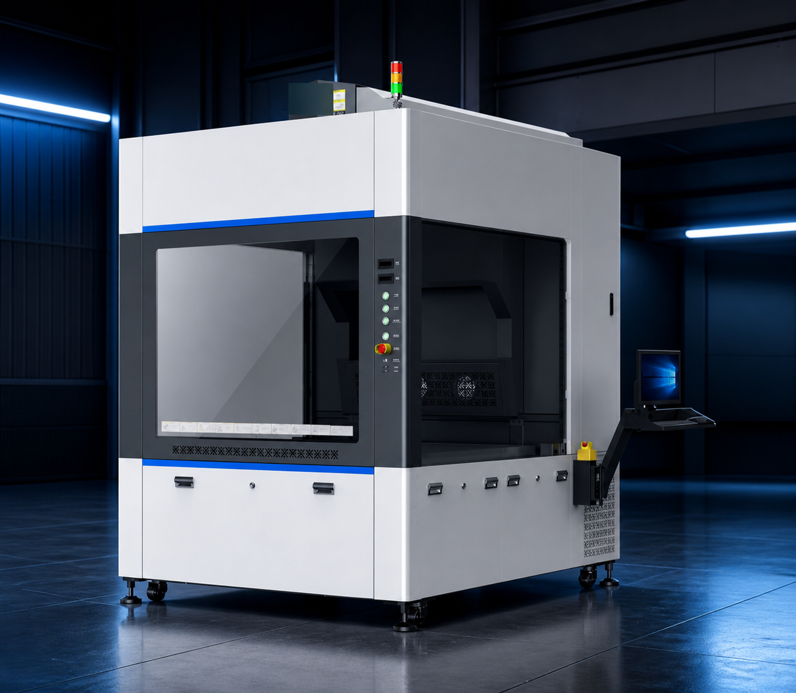
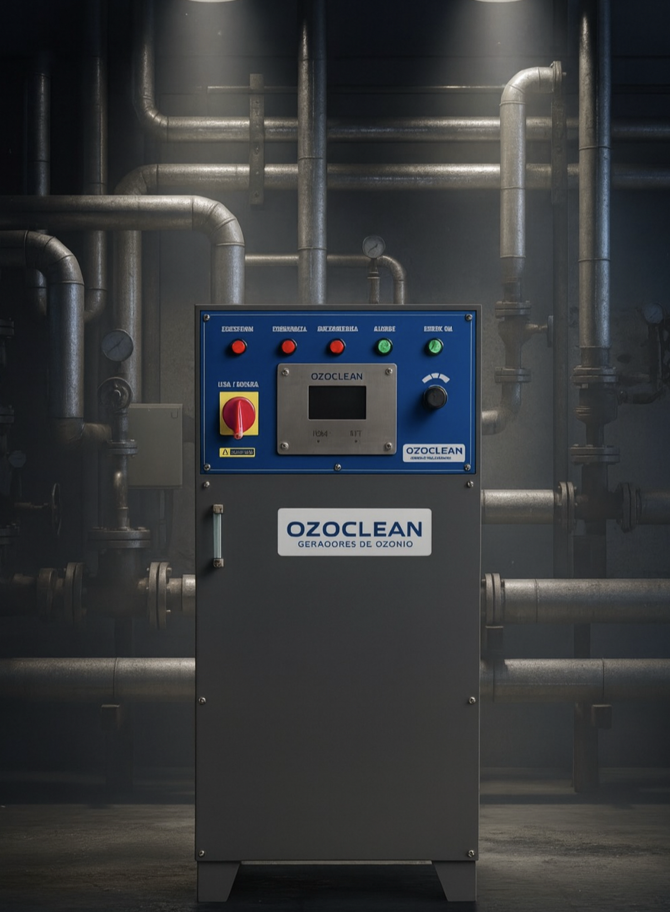

01
Texlaser
MÁQUINAS LASERAcabamento, marcação e personalização com mais controle, repetibilidade e liberdade criativa para jeans, camisetas e tecidos.
↗
Soluções industriais em laser e ozônio para transformar processos em mais precisão, produtividade e resultado.
Duas frentes. Uma visão de processo.
A Texlaser Group distribui tecnologia industrial para empresas que não podem parar. Unimos soluções laser e ozônio a uma visão prática de operação, implantação e resultado.
Converse com a nossa equipe ↗Atendimento próprio em São Paulo, com foco em aplicações reais e relações de longo prazo.
TX / 01 — BRASILExperiência que conhece a operação por dentro.
Com mais de 20 anos de experiência no mercado de laser industrial, Alex Rodrigues reúne conhecimento técnico, treinamentos e vivência prática para orientar cada decisão com mais clareza.
Além de participar de feiras e capacitações do setor, já esteve à frente de uma lavanderia industrial para jeans — conhecendo de perto os desafios, os ritmos e as exigências de quem produz.
Tecnologia certa para o processo certo. Começamos pelo universo do jeans e das lavanderias industriais.
Acabamento, marcação e personalização com mais controle, repetibilidade e liberdade criativa para jeans, camisetas e tecidos.
Geradores de ozônio para aplicações industriais em lavanderias, tratamento de água e efluentes, alimentos e outros processos.
Uma apresentação por dentro do processo
Role para explorar cada solução, suas aplicações e os principais dados técnicos.

TEXLASER / CO₂
OZOCLEAN / O₃Texlaser · acabamento têxtil
Laser CO₂ para jeans, camisetas e tecidos. Uma plataforma para criar efeitos, marcar superfícies e levar mais consistência ao acabamento.
Ozoclean · tratamento industrial
Geradores de ozônio para lavanderias, água e efluentes e outras aplicações industriais que pedem controle, eficiência e segurança operacional.
Uma base tecnológica que acompanha a necessidade do seu processo — hoje e na próxima etapa.
Conversamos sobre o seu processo, volume e desafio.
Encontramos a configuração que faz sentido para a operação.
Apoiamos a entrada da tecnologia na rotina da fábrica.
Treinamento e suporte para manter a produção evoluindo.
Conte um pouco sobre a sua operação. Nosso atendente direciona você para a melhor solução.